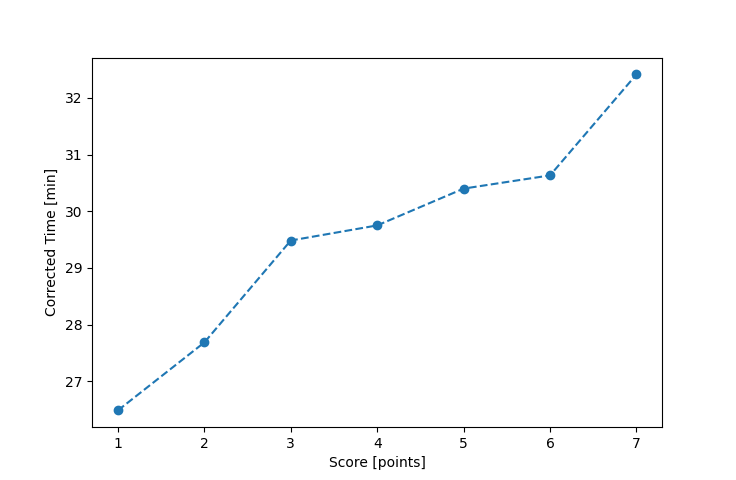

| Wind: | 2-3 (BFT) |
|---|---|
| RC: | Rod_H, Ian_O |
| Date: | June 20, 2021 |
| Notes: | M3 Starboard Rounding |
| Rank / Score | Name | Boat | Input Time [mm:ss] | Input Offset [mm:ss] | Race Time [mm:ss] | Race Time [s] | Handicap | Corrected Time [s] | Corrected Time [mm:ss] |
|---|---|---|---|---|---|---|---|---|---|
| 1.0 | Mike_F | SF | 31:35 | 05:00 | 26:35 | 1595 | 1.00400 | 1589 | 26:29 |
| 2.0 | Bill_P | SF | 32:48 | 05:00 | 27:48 | 1668 | 1.00400 | 1661 | 27:41 |
| 3.0 | Matt_L | DLPSR | 37:01 | 05:00 | 32:01 | 1921 | 1.08600 | 1769 | 29:29 |
| 4.0 | Nedra_F | SF | 34:52 | 05:00 | 29:52 | 1792 | 1.00400 | 1785 | 29:45 |
| 5.0 | Lewis_V | BCN | 31:27 | 05:00 | 26:27 | 1587 | 0.87000 | 1824 | 30:24 |
| 6.0 | Chris_E | SF | 35:45 | 05:00 | 30:45 | 1845 | 1.00400 | 1838 | 30:38 |
| 7.0 | David_Bu | SF | 37:33 | 05:00 | 32:33 | 1953 | 1.00400 | 1945 | 32:25 |
| 8.0 | Shawn_W | BUT | DNF | -- | -- | -- | -- | -- | DNF |

Application Notes:
All race results are unofficial
View source code at https://github.com/cessnao3/portsmouthracecalc/